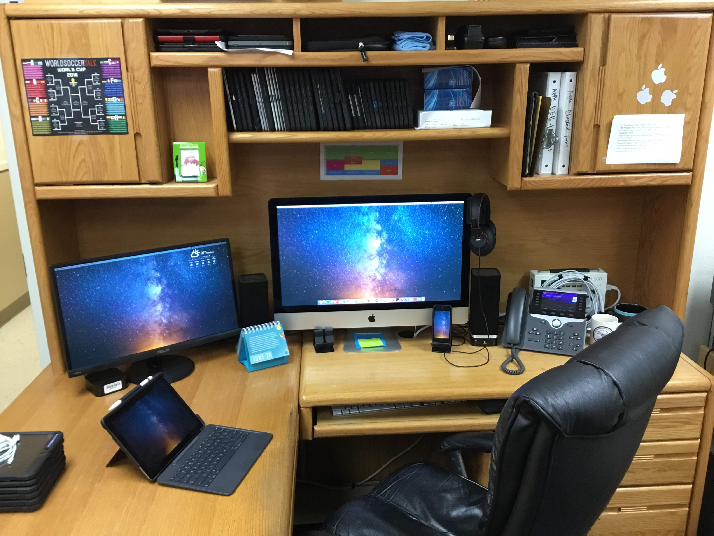

Enterprise Shift of Apple Device Management
We've been hinting at it for a long time - macOS Admins: imaging is dead. It's all part of the Enterprise shift in Apple device management.
Honest Take on Mosyle as an MDM
3,700 iPads + 200 iMacs + 700 AppleTVs = 1 MDM (and me)
tvOS Automated Device Enrollment
From the box to Conference Room Mode: 3 cables, no remotes. The lessons learned and the best solutions that worked for me in a 650+ AppleTV environment.

Pursuing the "Friday Desk"
June of 2018... the last time my desk looked this clean. This past year has been the constant (failing) pursuit of the elusive "Friday Desk."